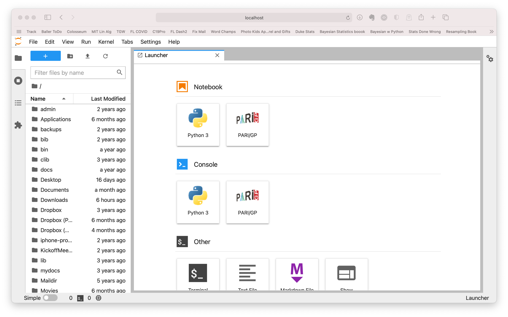
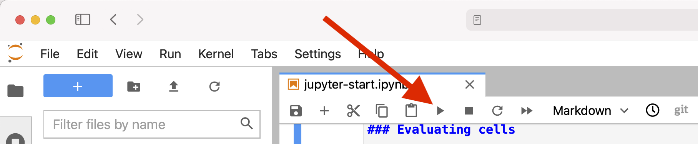
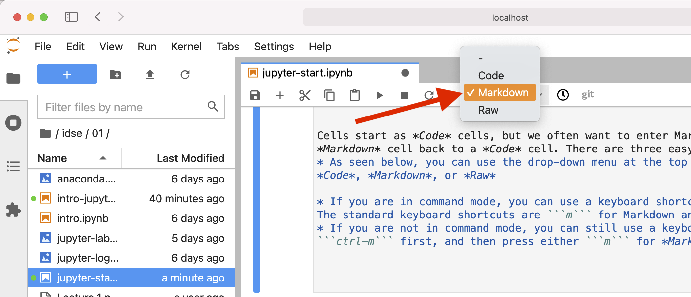

Getting Started in Jupyter
Contents
1.6. Getting Started in Jupyter#
Let’s begin exploring JupyterLab using an existing notebook:
1) Download a Jupyter notebook file.
We will use the file “intro.ipynb”, which is available by clicking on the link below or typing the link into your browser:
Change this to an Intro notebook when this section is finished
If your browser displays the notebook as text, you will need to tell it to save it as a file. You can usually do this by right-clicking or control-clicking in the browser window and choosing to save the page as a file. For instance in Safari 14, choose the “Save Page As…” menu item. Be sure to name your file with a .ipynb ending.)
Hint: If your file was saved to your default Downloads folder, be sure to move it to your notebooks folder to keep things organized!
2) Start JupyterLab.
JupyterLab can be started from the Anaconda-Navigator program that is installed with the Anaconda distribution. Start Anaconda-Navigator, scroll to find JupyterLab and then click the Launch button under JupyterLab. JupyterLab should start up in your browser.
Alternative for command line users: users that are familiar with the command line can start JupyterLab by typing jupyter lab at the command prompt (provided the anaconda bin directory is on the command line search path). Because setting this up is specialized to each operating system and command shell, the details are omitted. However, details of how to set up the path for Anaconda can be found at many sites online.
Your JupyterLab should open to a view that looks something like the one below:

Warning
If you have used JupyterLab before, it may not look like this – it will pick up where you left off!
The JupyterLab interface has many different parts:
The menu bar is across the very top of the JupyterLab app. We will introduce the use of menus later in this lesson.
The left sidebar occupies the left side below the menu bar. It includes several different tabs, which you can switch between by clicking the different icons on the very far left of the left sidebar. In the view above, the folder icon is highlighted, which indicates that the file browser is selected. For this book, we will use the left sidebar only to access the file browser.
The main work area is to the right of the left sidebar. The main work area will usually show whatever document you are working on. However, if you have not opened any document yet, it will show you different types of notebooks that you can open and other tools that you can access. To start a completely new Jupyter notebook file that can run Python 3 code, you could click on the Python 3 icon under
Notebooks. For now, you do not need to do that.
Detailed documentation for JupyterLab is available at https://jupyterlab.readthedocs.io/
3) Navigate to the downloaded notebook.
Use the file browser in the left sidebar of JupyterLab to navigate to the downloaded file.
If the file browser is not already showing your files, click on the folder icon (on the very left hand side of the window) to switch to it.
Navigation using the file browser should be similar to navigating in most file selection boxes:
Single click on items to select them
Double click on folders to navigate into them
Double click on files to open them
As you navigate down into folders, the current path (relative to your starting path) is shown above the file lsit. You can navigate back out of folders by clicking on the name of a parent folder in the current path.
If you downloaded the file intro.ipynb to the notebooks subdirectory of the data-science directory, which lies in your home directory, then you would:
Double click on the
data-sciencefolderDouble click on the
notebooksfolderDouble click on the file
intro.ipynb
The file intro.ipynb should open in the main work area.
1.6.1. Learn the basics of JupyterLab#
After opening the intro.ipynb notebook, take a minute to scroll through the intro.ipynb notebook before interacting with it. Note that the notebook includes formatted text, graphics, mathematics, and Python programming code. You will learn to use all of these features in working with data and presenting your analyses.
1.6.1.1. Notebook structure#
Jupyter notebooks are subdivided into parts called cells. Each cell can be used for different purposes; we will use them for either Python code or for Markdown, which is a simple markup language that allows the creation of formatted text with math and graphics. Code cells are subdivided into Input and Output parts. Single click on any part of the intro.ipynb notebook to select a cell. The selected cell will be indicated by a color bar along the entire left side of the cell.
1.6.1.2. JupyterLab interface modes#
The JupyterLab user interface can be in one of two modes, and these modes affect what you can do with a cell:
In Edit Mode, the focus is on one cell, which will be outlined in color (blue on my computer with the default theme), and the cursor will contain a blinking cursor indicating where typed text will appear.
In Command Mode, you cannot edit or enter text into a cell, but you can navigate among cells and use keyboard shortcuts to act on them, including running cells, selecting groups of cells, and copying/cutting/pasting or deleting cells.
There are several ways to
In Command Mode, to switch to Edit Mode and begin editing a cell:
Double-click on a cell.
Select a cell using the cursor keys and then press Enter.
In Edit Mode, to switch to Command Mode:
Press the ESC key. The current cell is not evaluated, but it will be selected in Command Mode.
If editing a cell that is not the last cell in the notebook, press Shift-Enter to evaluate the current cell and return to Command Mode. (If you are in the last cell of the notebook, Shift-Enter will evaluate the current cell, create a new cell below it, and will remain in EDIT MODE in the newly created cell.
1.6.2. More on cells#
In EDIT MODE, code or Markdown can be typed into a cell. Remember that each cell has a cell type associated with it. The cell type does not limit what can be entered into a cell. The cell type determines how a cell is evaluated. When a cell is evaluated, the contents are parsed by either a Markdown render (for a Markdown cell) or the Python kernel (for a Code cell). Cells may be evaluated in many different ways. Here are a few of the typical ways that we will use:
Most commonly, we will evaluate the current cell by pressing
shift-Enteron the keyboard. This will always evaluate the current cell. If this is the last cell in the notebook, it will also insert a new cell below the current cell, so that it is easy to continue building the notebook.It is also possible to evaluate a cell using the toolbar at the top of the notebook. Use the triangular “play” button (pointed to by the red arrow in the image below) to execute the currently selected cell or cells.

Sometimes we wish to make changes in the middle of an existing notebook. To evaluate the current cell and insert a new cell below it, press
alt-Enteron the computer keyboard.Cells can also be run by some of the commands in the
Kernelmenu in the JupyterLab menu. For example, it is always best to reset the Python kernel and run all of the cells in a notebook from top to bottom before sharing a Jupyter notebook with someone else (for example, before submitting an assignment). To do this, click on theKernelmenu and choose theRestart Kernel and Run All Cells...menu item.
If you enter Markdown into a Code cell or Python into a Markdown cell, the results will not be what you intend. For instance, most Markdown is not valid Python, and so if Markdown is entered into a Code cell, a syntax error will be displayed when the cell is evaluated. Fortunately, you can change the cell type afterward to make it evaluate properly.
Important!
New cells, including the starting cell of a new notebook, start as Code cells.
Cells start as Code cells, but we often want to enter Markdown instead. We also may wish to switch a Markdown cell back to a Code cell. There are three easy ways to change the cell type:
As seen below, you can use the drop-down menu at the top of the notebook to set the cell type to Code, Markdown, or Raw

If you are in command mode, you can use a keyboard shortcut to change the type of a selected cell. The standard keyboard shortcuts are
mfor Markdown andyfor code.If you are not in command mode, you can still use a keyboard shortcut, but you will need to press
ctrl-mfirst, and then press eithermfor Markdown oryfor Code.
1.6.3. Intro to Markdown in Jupyter#
You will use Jupyter to create documents that inform the reader about data. Although we will use code to process the data and generate graphs, that is usually not enough to tell the story to the reader. Markdown is used to add text, heading, mathematics, and other graphics.
The example notebook intro.ipynb demonstrates the main features of Markdown that we will need in this book. Recall that you can double click on any cell in the notebook to see the Markdown source. Below is a d the title “Intro to Jupyter and Python” cell to see the Markdown tex. This cell illustrates several features of Markdown:
1. Headings
The first cell (starting with “Intro to Markdown”) illustrates how to use Markdown to format headings.
Headings are entered by prefacing text by one or more # (usually pronounced “hash”) symbols. If you know any HTML, then # Title is equivalent to a <h1>Title</h1>, ### Subtitle is equivalent to <h2>Subtitle</h2>, etc. Note that you must put a space between the hashes and the text for it to be recognized as a heading.
2. Text and paragraphs
The second cell shows paragraphs of text. Regular text can be entered as normal.
Blank lines between text indicate the start of a new paragraph; press Enter twice
at the end of a paragraph to leave such a blank line.
Other line breaks do not create a new paragraph and can be used
to avoid over-long lines of text or to separate sentences so they can be
more easily reordered in the future.
3. Emphasis
The third cell (labeled “Emphasis”) illustrates how to make text italicized or bold. Double click on the cell (to view the source text).
Text can be italicized by surrounding it by single asterisks, like
*italicize text*: italicize textSimilarly, text can be bolded by surrounding it by double asterisks, like
**bold text**: bold textText can be both italicized and bolded by surrounding it with triple asterisks, like
***bold and italics***: bold and italics
4. Bulleted and Numbered Lists
The fourth cell illustrates how to make bulleted and numbered lists.
Bulleted lists can be created by starting a line with an asterisk and a space, followed by the text of the bulleted item. Bulleted sub-lists can be created by tab-indenting a bulleted list under a bulleted item. For example,
* Item 1
* Item 1.1
* Item 1.2
*Item 2
formats as
Item 1
Item 1.1
Item 1.2 *Item 2
Numbered lists can be created by starting a line with a number, a period, and a space, followed by the item to be numbered. Note that the first number you use in a sequence of numbered items will determine the starting point for numbering, but later values are ignored. It is a good habit in most cases to use 1 for every numbered item because then you can rearrange them via cut and pasted without worrying about upsetting the overall list numbering. Numbered sub-lists can be created by tab-indenting a numbered list under a numbered item. For example,
1. Item 1
1. Item 1.1
1. Item 1.2
3. Item 2
formats as
Item 1
Item 1.1
Item 1.2
Item 2
5. Links and images
The fifth cell gives an example of a link and an image.
Links are easily created by putting the link text in square brackets, followed by the link URL in parentheses, like:
[Example link](http://google.com)
which is rendered as
Images are entered in a very similar way to URLs. Just put an exclamation point (!) before the square brackets. The text in the square brackets will be used as the “alt text”, which is used by screen readers or displayed when hovering the mouse over the image. Images can also be inserted by dragging them from your file manager into a cell. After the Markdown code is inserted, you can edit the alt-text to something more meaningful.
6. Mathematics
The sixth cell (labeled “Mathematics”) illustrates formatted mathematics.
Markdown in Jupyter supports sophisticated formatting of mathematics using
LaTeX
(pronounced lay tek) notation.
For inline equations (those that will appear in-line with text, include the
LaTeX notation between dollar signs, like $\sin^2 x$ renders as \(\sin^2 x\).
Longer equations should be displayed separate from the text and can be created by enclosing them between pairs of dollar signs. For example,
$$
\int_{0}^{\infty} e^{-x}~dx = 1
$$
is rendered as $\( \int_{0}^{\infty} e^{-x}~dx = 1 \)$
7. Other Markdown formatting
Markdown has many other features that we will not cover, such as horizontal rules, block quotes, syntax highlighting, and tables. A good reference for Markdown syntax is Markdown Guide(https://www.markdownguide.org/extended-syntax/)
1.6.4. Getting Notebooks Into and Out of Jupyter Lab#
There are several ways to get notebooks into Jupyter Lab:
As previously mentioned, you can use the left-hand files pane to navigate to the current location of a file. Note that you will be constrained to only navigating to files that are in the directory in which Jupyter was started or any subdirectory below that. One disadvantage of this approach is that your work will be saved wherever that file currently resides. For instance, if you have downloaded a notebook from the internet into your
Downloadsfolder, your work on that notebook will remain in theDownloadsfolder.You can use drag-and-drop to copy any file into a directory that you are currently browsing using Jupyter Lab’s files pane. To do this:
Open the files panel in Jupyter and navigate to the directory where you want to work.
Open the folder containing the file you want to copy.
Position and resize the folder and your web browser’s window so that you can see both at the same time.
Click and hold on the Jupyter notebook that you want to move. Then drag it onto the files panel.
When the Jupyter notebook is over Jupyter lab’s files panel, the outline of the files panel will change to indicate that it is ready for you to drop the file. Release the mouse button or trackpad to copy the file into the selected directory.
Note that this makes a copy of the file from its original location.
As an alternative to drag-and-drop, you can click on the upload icon (an arrow with a line under it) at the very top of the files panel. This will bring up a file selector that you can use to copy a file from anywhere on your computer.
1.6.5. Jupyter Magics#
Code cells can also contain special instructions intended for JupyterLab itself, rather than the
Python kernel. These are called magics. For instance, to output your current directory, you can use the
%pwd magic
%pwd
'/Users/jshea/Dropbox (UFL)/teaching/stats/book/fdsp/01-intro'
You can use the “%cd” magic to change your directory (recall that~ is a shortcut for your home user directory):
cd ~
/Users/jshea
Changing directories is often useful to switch to a directory where data is stored.
You can get a list of magics and other information about Jupyter using the %quickref magic.
%quickref
IPython -- An enhanced Interactive Python - Quick Reference Card
================================================================
obj?, obj?? : Get help, or more help for object (also works as
?obj, ??obj).
?foo.*abc* : List names in 'foo' containing 'abc' in them.
%magic : Information about IPython's 'magic' % functions.
Magic functions are prefixed by % or %%, and typically take their arguments
without parentheses, quotes or even commas for convenience. Line magics take a
single % and cell magics are prefixed with two %%.
Example magic function calls:
%alias d ls -F : 'd' is now an alias for 'ls -F'
alias d ls -F : Works if 'alias' not a python name
alist = %alias : Get list of aliases to 'alist'
cd /usr/share : Obvious. cd -<tab> to choose from visited dirs.
%cd?? : See help AND source for magic %cd
%timeit x=10 : time the 'x=10' statement with high precision.
%%timeit x=2**100
x**100 : time 'x**100' with a setup of 'x=2**100'; setup code is not
counted. This is an example of a cell magic.
System commands:
!cp a.txt b/ : System command escape, calls os.system()
cp a.txt b/ : after %rehashx, most system commands work without !
cp ${f}.txt $bar : Variable expansion in magics and system commands
files = !ls /usr : Capture system command output
files.s, files.l, files.n: "a b c", ['a','b','c'], 'a\nb\nc'
History:
_i, _ii, _iii : Previous, next previous, next next previous input
_i4, _ih[2:5] : Input history line 4, lines 2-4
exec(_i81) : Execute input history line #81 again
%rep 81 : Edit input history line #81
_, __, ___ : previous, next previous, next next previous output
_dh : Directory history
_oh : Output history
%hist : Command history of current session.
%hist -g foo : Search command history of (almost) all sessions for 'foo'.
%hist -g : Command history of (almost) all sessions.
%hist 1/2-8 : Command history containing lines 2-8 of session 1.
%hist 1/ ~2/ : Command history of session 1 and 2 sessions before current.
%hist ~8/1-~6/5 : Command history from line 1 of 8 sessions ago to
line 5 of 6 sessions ago.
%edit 0/ : Open editor to execute code with history of current session.
Autocall:
f 1,2 : f(1,2) # Off by default, enable with %autocall magic.
/f 1,2 : f(1,2) (forced autoparen)
,f 1 2 : f("1","2")
;f 1 2 : f("1 2")
Remember: TAB completion works in many contexts, not just file names
or python names.
The following magic functions are currently available:
%alias:
Define an alias for a system command.
%alias_magic:
::
%autoawait:
%autocall:
Make functions callable without having to type parentheses.
%automagic:
Make magic functions callable without having to type the initial %.
%autosave:
Set the autosave interval in the notebook (in seconds).
%bookmark:
Manage IPython's bookmark system.
%cat:
Alias for `!cat`
%cd:
Change the current working directory.
%clear:
Clear the terminal.
%colors:
Switch color scheme for prompts, info system and exception handlers.
%conda:
Run the conda package manager within the current kernel.
%config:
configure IPython
%connect_info:
Print information for connecting other clients to this kernel
%cp:
Alias for `!cp`
%debug:
::
%dhist:
Print your history of visited directories.
%dirs:
Return the current directory stack.
%doctest_mode:
Toggle doctest mode on and off.
%ed:
Alias for `%edit`.
%edit:
Bring up an editor and execute the resulting code.
%env:
Get, set, or list environment variables.
%gui:
Enable or disable IPython GUI event loop integration.
%hist:
Alias for `%history`.
%history:
::
%killbgscripts:
Kill all BG processes started by %%script and its family.
%ldir:
Alias for `!ls -F -G -l %l | grep /$`
%less:
Show a file through the pager.
%lf:
Alias for `!ls -F -l -G %l | grep ^-`
%lk:
Alias for `!ls -F -l -G %l | grep ^l`
%ll:
Alias for `!ls -F -l -G`
%load:
Load code into the current frontend.
%load_ext:
Load an IPython extension by its module name.
%loadpy:
Alias of `%load`
%logoff:
Temporarily stop logging.
%logon:
Restart logging.
%logstart:
Start logging anywhere in a session.
%logstate:
Print the status of the logging system.
%logstop:
Fully stop logging and close log file.
%ls:
Alias for `!ls -F -G`
%lsmagic:
List currently available magic functions.
%lx:
Alias for `!ls -F -l -G %l | grep ^-..x`
%macro:
Define a macro for future re-execution. It accepts ranges of history,
%magic:
Print information about the magic function system.
%man:
Find the man page for the given command and display in pager.
%matplotlib:
::
%mkdir:
Alias for `!mkdir`
%more:
Show a file through the pager.
%mv:
Alias for `!mv`
%notebook:
::
%page:
Pretty print the object and display it through a pager.
%pastebin:
Upload code to dpaste.com, returning the URL.
%pdb:
Control the automatic calling of the pdb interactive debugger.
%pdef:
Print the call signature for any callable object.
%pdoc:
Print the docstring for an object.
%pfile:
Print (or run through pager) the file where an object is defined.
%pinfo:
Provide detailed information about an object.
%pinfo2:
Provide extra detailed information about an object.
%pip:
Run the pip package manager within the current kernel.
%popd:
Change to directory popped off the top of the stack.
%pprint:
Toggle pretty printing on/off.
%precision:
Set floating point precision for pretty printing.
%prun:
Run a statement through the python code profiler.
%psearch:
Search for object in namespaces by wildcard.
%psource:
Print (or run through pager) the source code for an object.
%pushd:
Place the current dir on stack and change directory.
%pwd:
Return the current working directory path.
%pycat:
Show a syntax-highlighted file through a pager.
%pylab:
::
%qtconsole:
Open a qtconsole connected to this kernel.
%quickref:
Show a quick reference sheet
%recall:
Repeat a command, or get command to input line for editing.
%rehashx:
Update the alias table with all executable files in $PATH.
%reload_ext:
Reload an IPython extension by its module name.
%rep:
Alias for `%recall`.
%rerun:
Re-run previous input
%reset:
Resets the namespace by removing all names defined by the user, if
%reset_selective:
Resets the namespace by removing names defined by the user.
%rm:
Alias for `!rm`
%rmdir:
Alias for `!rmdir`
%run:
Run the named file inside IPython as a program.
%save:
Save a set of lines or a macro to a given filename.
%sc:
Shell capture - run shell command and capture output (DEPRECATED use !).
%set_env:
Set environment variables. Assumptions are that either "val" is a
%store:
Lightweight persistence for python variables.
%sx:
Shell execute - run shell command and capture output (!! is short-hand).
%system:
Shell execute - run shell command and capture output (!! is short-hand).
%tb:
Print the last traceback.
%time:
Time execution of a Python statement or expression.
%timeit:
Time execution of a Python statement or expression
%unalias:
Remove an alias
%unload_ext:
Unload an IPython extension by its module name.
%who:
Print all interactive variables, with some minimal formatting.
%who_ls:
Return a sorted list of all interactive variables.
%whos:
Like %who, but gives some extra information about each variable.
%xdel:
Delete a variable, trying to clear it from anywhere that
%xmode:
Switch modes for the exception handlers.
%%!:
Shell execute - run shell command and capture output (!! is short-hand).
%%HTML:
Alias for `%%html`.
%%SVG:
Alias for `%%svg`.
%%bash:
%%bash script magic
%%capture:
::
%%debug:
::
%%file:
Alias for `%%writefile`.
%%html:
::
%%javascript:
Run the cell block of Javascript code
%%js:
Run the cell block of Javascript code
%%latex:
Render the cell as a block of latex
%%markdown:
Render the cell as Markdown text block
%%perl:
%%perl script magic
%%prun:
Run a statement through the python code profiler.
%%pypy:
%%pypy script magic
%%python:
%%python script magic
%%python2:
%%python2 script magic
%%python3:
%%python3 script magic
%%ruby:
%%ruby script magic
%%script:
::
%%sh:
%%sh script magic
%%svg:
Render the cell as an SVG literal
%%sx:
Shell execute - run shell command and capture output (!! is short-hand).
%%system:
Shell execute - run shell command and capture output (!! is short-hand).
%%time:
Time execution of a Python statement or expression.
%%timeit:
Time execution of a Python statement or expression
%%writefile:
::
1.6.6. Saving Your Work, Closing Notebooks, and Closing Jupyter Lab#
You can save your work by choosing Save Notebook in Jupyter Lab’s File menu, or by pressing the keyboard sequence listed next to that item in the menu. When you manually save your work in this way, Jupyter actually saves two copies of your work: it updates the .ipynb file that you see in the file list, and it also updates a hidden checkpoint file. When you are updating your document, Jupyter will also autosave your work periodically – the default is every 120s. When Jupyter autosaves, it only updates the .ipynb file. If Jupyter crashes or your quit it without saving your notebooks, your last autosaved work will be what you see in the .ipynb files. However, you can always revert to the version that your purposefully saved by using the Revert Notebook to Checkpoint item in the File menu.
When starting new Jupyter notebooks, their initial name will be “Untitled.ipynb”. You can easily rename your notebook in a couple of ways. First, you can choose the Rename Notebook... option from the file menu. As an alternative, you can right-click on the notebook in the left-hand Files panel and
choose Rename. In both cases, be sure to only change the part of the notebook name that is in front of the .ipynb extension. The extension is used by Jupyter to recognize Jupyter notebooks.
When you are finished working with a Jupyter notebook, I recommend you perform the following steps:
First, from the
Kernelmenu, chooseRestart Kernel and Run All Cells...This will clear the previous output from your work and rerun every cell from the top down.Check over your notebook carefully to make sure you haven’t introduced any errors or produced any unexpected results from having been able to execute cells out of order and from deleting cells or their content. By performing these first two steps, you help make sure that someone else loading your notebook will be able to reproduce your work.
Check the notebook file name and update if necessary.
Save the notebook.
Choose
Close and Shutdown Notebookfrom Jupyter’sFilemenu.If you are completely finished working in Jupyter Lab, then choose
Shut Downfrom Jupyter’sFilemenu.
Another common workflow in Jupyter Lab is to use an existing notebook as a starting point for a new notebook. Again, there are several ways to do this:
If you already have the existing notebook open, then you can save it under a new name by choosing
Save Notebook As...from Jupyter’sFilemenu and giving the notebook a new name. Note that after you use this option, the notebook that is open in the main work are will be the notebook with the new name. You will no longer be working on the original notebook.You can also duplicate a notebook by right-clicking on the notebook’s name in the File panel on the left-hand side and choosing
Duplicate. A copy of the notebook will be created with the name of the existing notebook appended with a suffix like-Copy1before the.ipynb.